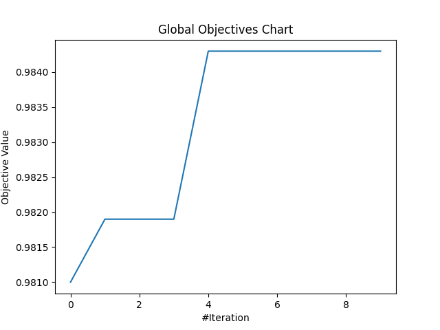

[Day 26]打鐵趁熱！來試著MealPy的更多應用，最佳化MLP與CNN網路
- Day: 26
- Date: 2024-10-02 00:07:11
- Author: golucky_sir
- Source: https://ithelp.ithome.com.tw/articles/10361957
- Series: https://ithelp.ithome.com.tw/2020-12th-ironman/articles/7610
- Series Title: 調整AI超參數好煩躁？來試試看最佳化演算法吧！
前言
昨天介紹了使用MealPy進行機器學習模型超參數的最佳化，今天再來看看深度學習的部分吧。
一樣我們來針對多層感知器(MLP)與卷積神經網路(CNN)進行最佳化。
問題假設
今天的問題假設我們一樣使用MLP和CNN來進行MNIST的手寫數字辨識，並且設定目標是測試資料準確率超過97%，關於Keras模型建立與訓練的部分就不贅述了，各位可以從網路上找到非常多相關教學。
最佳化MLP
首先我們還是以MLP來當作第一個例子，使用MLP進行MNIST手寫數字的辨識目前網路上與Youtube都有非常多相關教學，各大深度學習套件官方網站也有相關資源，各位若還不熟悉深度學習模型的部分可以先去參考看看。若沒問題的話，接下來我會帶各位一步一步最佳化MLP模型。
MLP程式碼
老樣子，MLP程式主要分為資料前處理，模型建立，訓練模型，最後回傳測試資料集的準確率。為了使程式看起來比較完整，我會使用第19天底下附錄的程式碼進行修改，此程式會順便把CNN的部份給搞定，所以待會CNN的部分就會精簡許多。
以下程式碼單純只是提供給各位MLP訓練的範例，此程式的修該方式有在第19天介紹了，不過基本上就只是將定義的方法等再稍微整理一下而已！
from tensorflow.keras.datasets.mnist import load_data
from tensorflow.keras.models import Sequential
from tensorflow.keras.layers import Input, Conv2D, MaxPooling2D, Flatten, Dropout, Dense
from tensorflow.keras.utils import to_categorical
import numpy as np
def get_MLP_model(layer_num:int = 2,
first_layer_unit:int = 128):
"""
中間隱藏層數量建議設定在2~4層
第一層神經元數量為first_layer_unit / 2^0=128
第二層神經元數量為first_layer_unit / 2^1=64
以此類推，到第四層只剩16個神經元。
Args:
layer_num: 模型的中間隱藏層數
first_layer_unit: 第一層的神經元數量
Returns: keras的模型。
"""
model = Sequential()
model.add(Input(shape=(28, 28, 1)))
model.add(Flatten())
for i in range(layer_num):
model.add(Dense(int(first_layer_unit / 2**i), activation="relu"))
model.add(Dense(10, activation="softmax"))
# model.summary()
model.compile(loss="categorical_crossentropy", optimizer="adam", metrics=["accuracy"])
return model
def training_and_evaluating_model(model, X_train, y_train, X_test, y_test,
batch_size:int = 128,
epochs:int = 10):
"""
訓練模型並將測試資料集的準確率作為輸出。
Args:
batch_size: 每次訓練一批的資料量
epochs: 訓練次數
Returns: 測試資料集的準確率，作為適應值回傳。
"""
model.fit(X_train, y_train, batch_size=batch_size, epochs=epochs, validation_split=0.1)
score = model.evaluate(X_test, y_test, verbose=0)
return score[1]
if __name__ == '__main__':
(X_train, y_train), (X_test, y_test) = load_data()
# shape = (60000, 28, 28) 標準化圖片像素到0~1之間
X_train = X_train.astype("float32") / 255
X_test = X_test.astype("float32") / 255
# shape = (60000, 28, 28, 1) 加入通道維度
X_train = np.expand_dims(X_train, -1)
X_test = np.expand_dims(X_test, -1)
# 將類別進行one-hot轉換
y_train = to_categorical(y_train, 10)
y_test = to_categorical(y_test, 10)
# 取得模型
model = get_MLP_model(layer_num=3, first_layer_unit=64)
# 訓練模型
acc = training_and_evaluating_model(model, X_train, y_train, X_test, y_test, batch_size=64, epochs=5)
print(acc) # 0.9684000015258789
構思問題
我們的目標是希望能夠再將準確率提高一些(高於97%)，接著來稍微規劃一下接下來程式的大方向吧，這個表格基本上也跟我之前介紹Optuna實作的表格幾乎相同，若各位對Optuna也有興趣的話歡迎去看看我在這系列的第19天的文章喔。
| 5W1H | 規劃內容 |
|---|---|
| Why | 最佳化MLP模型，目標為準確率超過97% |
| What | 最佳化問題是手寫數字辨識的分類任務，以準確率作為適應值 |
| Who | 預計對MLP中的隱藏層數量、第一層隱藏層的神經元數量、訓練批次量、訓練次數進行最佳化 |
| Where | 隱藏層數量為2~4層、第一層神經元數量從[64, 128, 256, 512]中選擇，批次量從[32, 64, 128]中選擇，訓練次數為5~50次(次數為5的倍數) |
| When | 計算完測試資料準確率後進行最佳化 |
| How | 使用MealPy的黏菌最佳化演算法(Slime Mould Algorithm, SMA) |
實現MealPy最佳化
接下來來照著第22天提到的新SOP來建立最佳化試驗吧，有不理解的內容歡迎回去複習一下那天提到的東西喔。程式範例是使用上次第19天結尾的附錄程式碼，在今天我會帶各位稍微修改一下。
-
定義目標函數：首先要來創建這次的應用，我想將MLP跟CNN的最佳化都統整到一個類別中，使用者可以在設定問題時設定要使用MLP或者使用CNN，所以初始化方法中會設定
used_model提供使用者選擇要最佳化的模型。
首先先幫這個問題類別取名吧，記得類別要繼承自Problem喔：from mealpy import Problem class Optimize_DLModel(Problem):-
初始化方法：這裡可以看到我們使用
self.used_model來設定要最佳化的模型。
然後由於MealPy的一些缺陷，之後最佳化時演算法產生的解會是一個 整數(索引值) ，所以在設定選擇模型第一層的神經元數量時我們需要定義一個list來存放所有可能的值，之後再直接用索引值去取出特定的值。
此外我也將初始化資料的方式額外定義成一個方法init_data(self)可供調用，這樣程式碼分割較清楚會比較容易閱讀。def __init__(self, minmax, bounds=None, used_model=None, name="", **kwargs): # 可以根據需求自定義其他參數 self.name = name # 設定其他參數，或者進行其他初始化 self.used_model = used_model # 設定要最佳化的模型 self.MLP_first_layer_unit_lst = [64, 128, 256, 512] # MLP的第一隱藏層層數搜索空間串列 self.CNN_first_layer_unit_lst = [16, 32, 64, 128, 256] # CNN的第一隱藏層層數搜索空間串列 self.batch_size_lst = [32, 64, 128] # 訓練批次搜索空間串列 self.init_data() # 初始化訓練資料 super().__init__(bounds, minmax, **kwargs) def init_data(self): (X_train, y_train), (X_test, y_test) = load_data() # 標準化圖片像素到0~1之間，此時shape = (60000, 28, 28) X_train = X_train.astype("float32") / 255 X_test = X_test.astype("float32") / 255 # 加入通道維度，此時shape = (60000, 28, 28, 1) self.X_train = np.expand_dims(X_train, -1) self.X_test = np.expand_dims(X_test, -1) # 將類別進行one-hot轉換 self.y_train = to_categorical(y_train, 10) self.y_test = to_categorical(y_test, 10) -
定義目標函數中的計算：目標函數中會根據使用的模型名稱來決定要訓練哪個模型，基本上就是定義訓練方法，並在
obj_func(x)(這方法是繼承自Problem類別的，必須定義且名稱不可更改)方法中根據情況選擇呼叫特定方法即可，為了多一層保障順便寫一段程式拋出參數錯誤的例外。
也要定義MLP模型的訓練部分self.objective_MLP(x)。def obj_func(self, x): if self.used_model == 'mlp': return self.objective_MLP(x) elif self.used_model == 'cnn': return self.objective_CNN(x) else: raise ValueError('初始化參數used model必須為"mlp"或者"cnn"!') def objective_MLP(self, x): """ MLP 網路訓練的最佳化。 """ # MealPy因為就算設定搜索空間為IntegerVar輸入還會是浮點數資料，所以需要指定成整數資料。 # 為了使程式碼較簡單明瞭，這邊會將帶入解進行初步處理，使各位知道解中每個位置對應的意思! x = x.astype(int) layer_num = x[0] epochs = x[1] * 5 first_layer_unit = self.MLP_first_layer_unit_lst[x[2]] batch_size = self.batch_size_lst[x[3]] # 取得模型，這邊會把生成的解代入方法中並進行該次試驗的計算。 model = self.get_MLP_model(layer_num=layer_num, first_layer_unit=first_layer_unit) # 訓練模型，並回傳適應值。 acc = self.training_and_evaluating_model(model, batch_size=batch_size, epochs=epochs) # print(acc) return acc -
完善其他功能：這邊需要定義MLP模型的建立，一些相關的超參數設定要注意一下，之後演算法生成的解(超參數設定)會傳入這些方法中以定義該次試驗的模型，所以別忘了建立囉。
def get_MLP_model(self, layer_num: int = 2, first_layer_unit: int = 128): """ 中間隱藏層數量建議設定在2~4層 第一層神經元數量為first_layer_unit / 2^0=128 第二層神經元數量為first_layer_unit / 2^1=64 以此類推，到第四層只剩16個神經元。 Args: layer_num: 模型的中間隱藏層數 first_layer_unit: 第一層的神經元數量 Returns: keras的模型。 """ model = Sequential() model.add(Input(shape=(28, 28, 1))) model.add(Flatten()) for i in range(layer_num): model.add(Dense(int(first_layer_unit / 2 ** i), activation="relu")) model.add(Dense(10, activation="softmax")) # model.summary() model.compile(loss="categorical_crossentropy", optimizer="adam", metrics=["accuracy"]) return model -
定義回傳適應值：這邊一樣使用測試資料計算準確率並回傳適應值，MLP與CNN使用同一個方法。
def training_and_evaluating_model(self, model, batch_size: int = 128, epochs: int = 10): """ 訓練模型並將測試資料集的準確率作為輸出。 Args: batch_size: 每次訓練一批的資料量 epochs: 訓練次數 Returns: 測試資料集的準確率，作為適應值回傳。 """ model.fit(self.X_train, self.y_train, batch_size=batch_size, epochs=epochs, validation_split=0.1) score = model.evaluate(self.X_test, self.y_test, verbose=0) return score[1]
-
-
定義試驗：接著就來定義試驗吧，以下有一些注意事項也要留意一下。
-
選擇一個最佳化演算法：今天我們使用黏菌最佳化演算法(Slime Mould Algorithm, SMA)來尋找最佳解喔，首先設定一下最佳化的演算法。
# 求解問題，考慮到程式執行時間就先用10個epoch、5個pop_size就好了。 optimizer = SMA.OriginalSMA(epoch=10, pop_size=5, pr=0.03) -
設定要帶入目標函數的變數：接著來定義問題的搜索空間以及最佳化目標，基本上設定沒什麼變動，可以參考上面提到的表格，最佳化目標是尋找準確率的最大值。
這邊使用
MixedSetVar來定義指定集合的搜索空間，例如第一層的神經元數量與訓練批次。為了使程式比較明瞭所以我把所有超參數都分開定義，並指定了名稱name，這樣就可以一目瞭然這些參數的定義域以及意義。problem = Optimize_DLModel(bounds=[IntegerVar(lb=2, ub=4, name="layer_num"), # epochs搜索空間使用1~10並在程式內再乘以5等同於5~50，且公差為5的數列選擇。 IntegerVar(lb=1, ub=10, name="epochs"), MixedSetVar(valid_sets=(64, 128, 256, 512), name="first_layer_unit"), MixedSetVar(valid_sets=(32, 64, 128), name="batch_size")], used_model='mlp', name="MLP_optimizer", minmax="max") -
根據其他需求進行設定：今天也沒有設定其他東西，若有需要可以再自己新增。
-
-
執行試驗進行最佳化：接著就來進行最佳化吧。
optimizer.solve(problem=problem) -
後續處理與分析：這裡也是加上了輸出歷史最佳解以及歷史最佳適應值，以及繪製收斂曲線。
-
print最佳解：
print(f"Best solution: {optimizer.g_best.solution}") print(f"Best fitness: {optimizer.g_best.target.fitness}") -
產生視覺化圖表：
optimizer.history.save_global_objectives_chart(filename="result/global objectives chart")
-
-
分析最佳化結果：這次只跑10次迭代且每次只跑了5個粒子(
pop_size)，因迭代數少所以可能不會是最佳解，不過結果也還不錯，根據這些內容當中找到的最佳解為：1層隱藏神經層；訓練50個epochs；第一層隱藏層的神經元數量為256；訓練批次量為64。
這個設定訓練的測試資料的準確率有達到98.43%，有成功達成任務，好耶~
以下是收斂的曲線圖，可以看到就有慢慢提升XD正常發揮：

有時候可以用K-Fold Cross-Validation來更平均的統整模型的訓練情形，得到的結果會比較有統計上的意義。
因為只訓練一次的話隨機性較高，訓練多次再將結果取平均有時會是比較嚴謹的好作法，但缺點一樣是時間問題。
最佳化CNN
基本上最佳化CNN與MLP的流程完全相同，只有一點點部分要更改而已，完整流程都在上面提及到了，我會在底下附錄附上完整的程式碼，裡面也有CNN的部分。
各位可以根據上面的流程說明，以及底下的完整程式中CNN的部分來了解使用MealPy最佳化CNN喔，另外完整程式都附有註解說明，倘若還是不理解的話也可以在底下留言處詢問我。
結語
今天介紹了MealPy如何最佳化MLP的詳細說明，以及應用到CNN的範例程式。基本上無論是怎樣的類神經網路流程都大同小異，只要將最佳化模型類型以及超參數搜索空間等規劃好了之後再將之寫為程式就好了。
明後天一樣會來討論如何使用MealPy來最佳化生成對抗網路(Generative Adversarial Network, GAN)不過要考慮到群體粒子以及迭代數的話那勢必程式會執行非常久XD不管怎樣明天的事明天再說吧！
附錄：完整程式
from tensorflow.keras.datasets.mnist import load_data
from tensorflow.keras.models import Sequential
from tensorflow.keras.layers import Input, Conv2D, MaxPooling2D, Flatten, Dropout, Dense
from tensorflow.keras.utils import to_categorical
import numpy as np
from mealpy import FloatVar, Problem, SMA, StringVar, IntegerVar, MixedSetVar
import matplotlib.pyplot as plt
class Optimize_DLModel(Problem):
def __init__(self, minmax, bounds=None, used_model=None, name="", **kwargs): # 可以根據需求自定義其他參數
self.name = name
# 設定其他參數，或者進行其他初始化
self.used_model = used_model # 設定要最佳化的模型
self.MLP_first_layer_unit_lst = [64, 128, 256, 512] # MLP的第一隱藏層層數搜索空間串列
self.CNN_first_layer_unit_lst = [16, 32, 64, 128, 256] # CNN的第一隱藏層層數搜索空間串列
self.batch_size_lst = [32, 64, 128] # 訓練批次搜索空間串列
self.init_data() # 初始化訓練資料
super().__init__(bounds, minmax, **kwargs)
def init_data(self):
(X_train, y_train), (X_test, y_test) = load_data()
# 標準化圖片像素到0~1之間，此時shape = (60000, 28, 28)
X_train = X_train.astype("float32") / 255
X_test = X_test.astype("float32") / 255
# 加入通道維度，此時shape = (60000, 28, 28, 1)
self.X_train = np.expand_dims(X_train, -1)
self.X_test = np.expand_dims(X_test, -1)
# 將類別進行one-hot轉換
self.y_train = to_categorical(y_train, 10)
self.y_test = to_categorical(y_test, 10)
def get_CNN_model(self,
k: int = 3,
layer_num: int = 2,
first_layer_unit: int = 32):
"""
中間隱藏層數量建議設定在1~3層。
每次迴圈會使用MaxPooling2D
第一層MaxPooling2D會讓圖片長寬變(14, 14)
第二層MaxPooling2D會讓圖片長寬變(7, 7)
第三層MaxPooling2D會讓圖片長寬變(3, 3)
Args:
k: 卷積層中的卷積核大小
layer_num: 中間隱藏層數量，每層中包括一個卷積跟一層最大池化
first_layer_unit: 第一層網路的神經元數量
Returns: CNN 模型
"""
model = Sequential()
model.add(Input(shape=(28, 28, 1)))
for i in range(1, layer_num + 1):
model.add(Conv2D(first_layer_unit * i, kernel_size=(k, k), activation="relu", padding='same'))
model.add(MaxPooling2D(pool_size=(2, 2)))
model.add(Flatten())
model.add(Dropout(0.5))
model.add(Dense(10, activation="softmax"))
# model.summary()
model.compile(loss="categorical_crossentropy", optimizer="adam", metrics=["accuracy"])
return model
def get_MLP_model(self,
layer_num: int = 2,
first_layer_unit: int = 128):
"""
中間隱藏層數量建議設定在2~4層
第一層神經元數量為first_layer_unit / 2^0=128
第二層神經元數量為first_layer_unit / 2^1=64
以此類推，到第四層只剩16個神經元。
Args:
layer_num: 模型的中間隱藏層數
first_layer_unit: 第一層的神經元數量
Returns: keras的模型。
"""
model = Sequential()
model.add(Input(shape=(28, 28, 1)))
model.add(Flatten())
for i in range(layer_num):
model.add(Dense(int(first_layer_unit / 2 ** i), activation="relu"))
model.add(Dense(10, activation="softmax"))
# model.summary()
model.compile(loss="categorical_crossentropy", optimizer="adam", metrics=["accuracy"])
return model
def training_and_evaluating_model(self, model,
batch_size: int = 128,
epochs: int = 10):
"""
訓練模型並將測試資料集的準確率作為輸出。
Args:
batch_size: 每次訓練一批的資料量
epochs: 訓練次數
Returns: 測試資料集的準確率，作為適應值回傳。
"""
model.fit(self.X_train, self.y_train, batch_size=batch_size, epochs=epochs, validation_split=0.1)
score = model.evaluate(self.X_test, self.y_test, verbose=0)
return score[1]
def obj_func(self, x):
if self.used_model == 'mlp':
return self.objective_MLP(x)
elif self.used_model == 'cnn':
return self.objective_CNN(x)
else:
raise ValueError('初始化參數used model必須為"mlp"或者"cnn"!')
def objective_MLP(self, x):
"""
MLP 網路訓練的最佳化。
"""
# MealPy因為就算設定搜索空間為IntegerVar輸入還會是浮點數資料，所以需要指定成整數資料。
# 為了使程式碼較簡單明瞭，這邊會將帶入解進行初步處理，使各位知道解中每個位置對應的意思!
x = x.astype(int)
layer_num = x[0]
epochs = x[1] * 5
first_layer_unit = self.MLP_first_layer_unit_lst[x[2]]
batch_size = self.batch_size_lst[x[3]]
# 取得模型，這邊會把生成的解代入方法中並進行該次試驗的計算。
model = self.get_MLP_model(layer_num=layer_num, first_layer_unit=first_layer_unit)
# 訓練模型，並回傳適應值。
acc = self.training_and_evaluating_model(model, batch_size=batch_size, epochs=epochs)
# print(acc)
return acc
def objective_CNN(self, x):
"""
CNN 網路訓練的最佳化。
"""
# MealPy因為就算設定搜索空間為IntegerVar輸入還會是浮點數資料，所以需要指定成整數資料。
# 為了使程式碼較簡單明瞭，這邊會將帶入解進行初步處理，使各位知道解中每個位置對應的意思!
x = x.astype(int)
k = x[0]
layer_num = x[1]
epochs = x[2] * 5
first_layer_unit = self.CNN_first_layer_unit_lst[x[3]]
# 取得模型，這邊會把生成的解代入方法中並進行該次試驗的計算。
model = self.get_CNN_model(k=k, layer_num=layer_num, first_layer_unit=first_layer_unit)
# 訓練模型，並回傳適應值。
acc = self.training_and_evaluating_model(model, batch_size=128, epochs=epochs)
# print(acc)
return acc
if __name__ == '__main__':
# 新增最佳化試驗
# 設定問題，問題中的設定會作為初始化參數傳遞進去。
# 建立最佳化MLP問題
problem = Optimize_DLModel(bounds=[IntegerVar(lb=2, ub=4, name="layer_num"),
# epochs搜索空間使用1~10並在程式內再乘以5等同於5~50，且公差為5的數列選擇。
IntegerVar(lb=1, ub=10, name="epochs"),
MixedSetVar(valid_sets=(64, 128, 256, 512), name="first_layer_unit"),
MixedSetVar(valid_sets=(32, 64, 128), name="batch_size")],
used_model='mlp',
name="MLP_optimizer", minmax="max")
# 建立最佳化CNN問題
# problem = Optimize_DLModel(bounds=[IntegerVar(lb=2, ub=5, name="kernel size"),
# IntegerVar(lb=1, ub=3, name="kernel layer_num"),
# # epochs搜索空間使用1~10並在程式內再乘以5等同於5~50，且公差為5的數列選擇。
# IntegerVar(lb=1, ub=10, name="epochs"),
# MixedSetVar(valid_sets=(16, 32, 64, 128, 256), name="first_layer_unit")],
# used_model='cnn',
# name="CNN_optimizer", minmax="max")
# 求解問題，考慮到程式執行時間就先用10個epoch就好了。
optimizer = SMA.OriginalSMA(epoch=10, pop_size=5, pr=0.03)
optimizer.solve(problem=problem)
# 輸出歷史最佳解以及歷史最佳適應值
print(f"Best solution: {optimizer.g_best.solution}")
print(f"Best fitness: {optimizer.g_best.target.fitness}")
# 繪製收斂曲線
optimizer.history.save_global_objectives_chart(filename="result/global objectives chart")